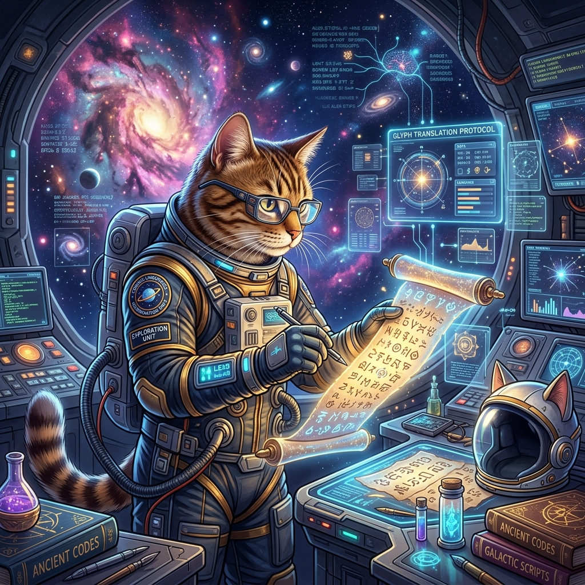

Kimberly Gu
Data Science • Product Management
I am an Informatics and Geography student at the University of Washington pursuing Departmental Honors in Informatics. I enjoy building data-driven products that combine AI, analytics, human-centered design, and technology to solve meaningful problems.
Turning data into decisions. Building products with purpose.
{kind=link}
Hey, this is me.
I'm Kimberly Gu, a student at the University of Washington pursuing dual degrees in Informatics and Geography (Data Science), along with Departmental Honors in Informatics.
My interests sit at the intersection of data science, artificial intelligence, product management, and human-centered technology. I enjoy transforming complex datasets into insights, building scalable products, and designing experiences that solve real user problems.
Through research, leadership, and software projects, I've developed a strong foundation in analytics, machine learning, data engineering, and collaborative product development.
Education
Data Science
- Machine Learning
- Statistical Analysis
- Data Visualization
- SQL
- Databases
Product & Design
- Product Management
- Human-Centered Design
- UX Research
- Information Architecture
- Design Thinking
Research
- Full-stack Development
- Software Engineering
- Algorithms
- Data Structures
- Cloud Fundamentals
Experience
- Improved operational efficiency through scheduling coordination, resource management, and cross-functional communication.
- Co-led one of UW's largest student data organizations.
- Managed event operations, partnerships, marketing, and community engagement.
- Built Python workflows that transformed historical records into structured datasets for research.
- Designed reproducible data pipelines and documentation.
Featured Projects

Svoboda Diaries Project
Collaborated as a Data Analyst Intern at the University of Washington to parse and transform semi-structured historical diary text for the Department of Middle Eastern Languages and Cultures into standardized datasets using Python, establishing reproducible processing pipelines and documentation.
Skills & Capabilities
Data Science
Product
Technical
Leadership
Data Science Society Executive
Co-leading student operations, managing event planning, marketing strategies, industry partnerships, and community engagement for UW's largest student data organization.
Research Collaborator
Collaborating with academic researchers to optimize parsing pipelines and data curation workflows for unstructured datasets, facilitating academic research and insights.
Department of Biochemistry Office Assistant
Supervising administrative tasks, coordinating schedules, and managing communication pathways across department members and university stakeholders to improve operations.
Cross-functional Team Leadership
Driving student-led project groups from problem definition to conceptual design, bridging product strategy with clean analytical pipelines.
Event Planning & Community Building
Organizing campus networking sessions, career panels, and interactive data analysis workshops to foster professional student growth and community engagement.
Public Speaking & Mentorship
Presenting technical data workflows to large groups of peers and mentoring underclassmen on data science fundamentals and PM pathways.
Let's build something impactful together.
Whether you want to discuss data science opportunities, product management ideas, collaborative research, or just say hello, my inbox is always open.